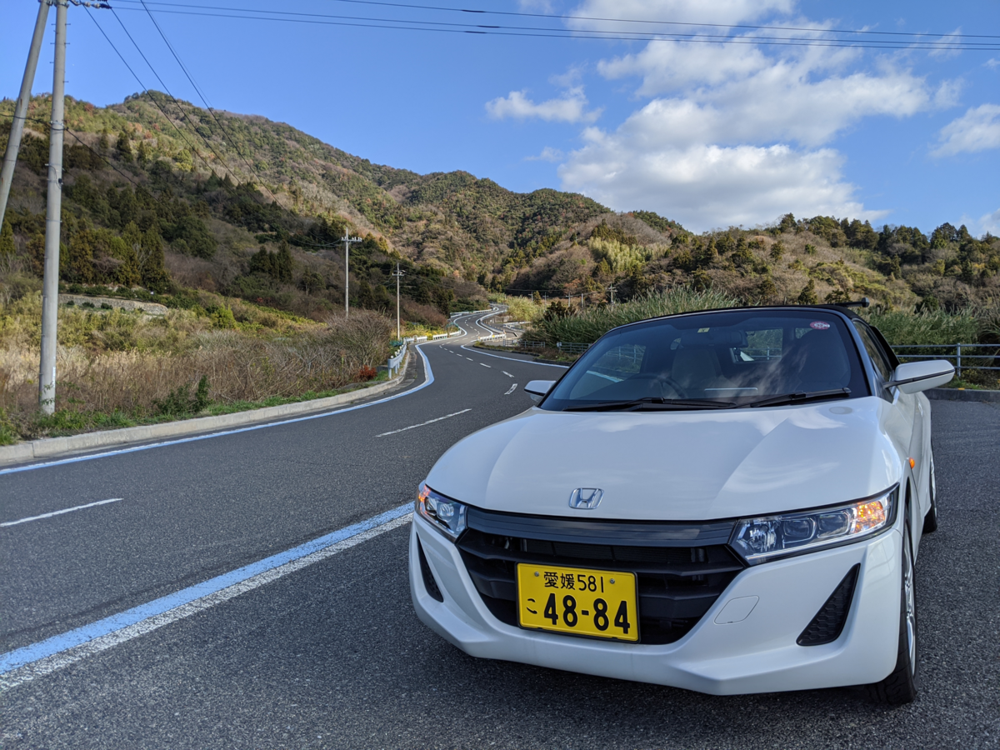
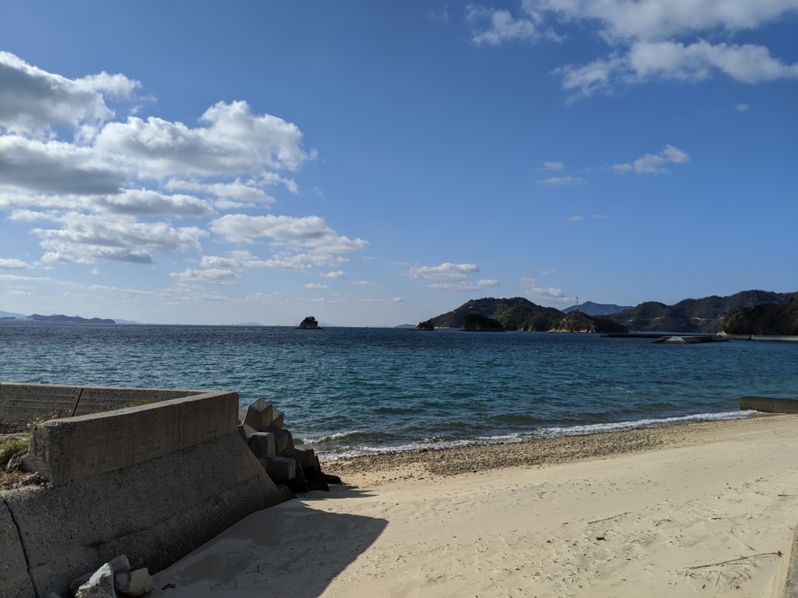
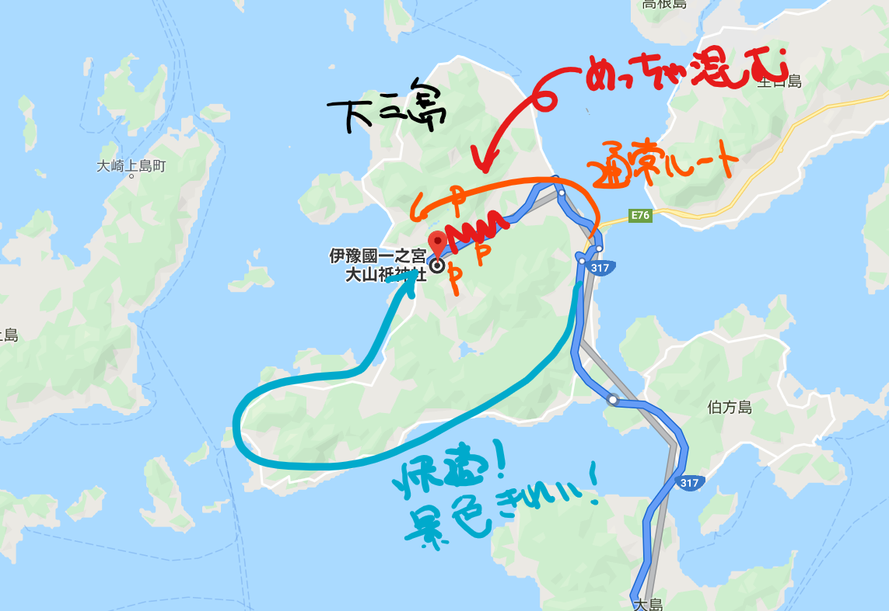
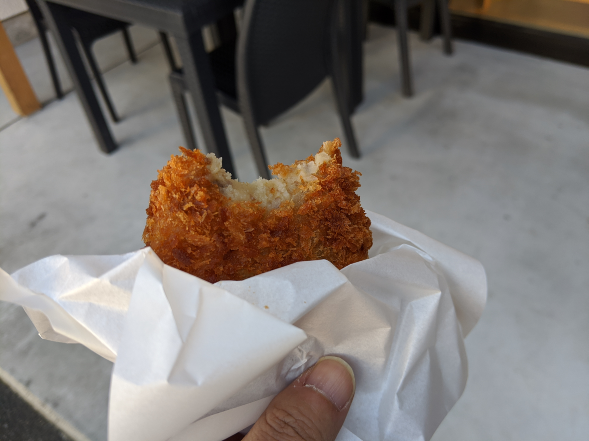

大三島まで初詣に行った
公開日：
元日はあいにくの曇り空、初日の出を拝むのは難しい……というのは天気予報で知っていたので、朝は目覚ましをかけずにぐっすり寝た。それでも朝の8時にはパッチリと目が覚め、大変活動的な気分になる。親父をたたき起こして、今治の喜助の湯にでも入ろうと、S660 をマンションの機械式駐車場から引っ張り出して乗り出した。
北へ進路を取り少し走り出すと海に出たが、空はスカッと晴れ渡っていた。ルーフを開けて走ってもよいぐらいだ（ナビシートの人が反対したのでこれは断念）。「せっかくいい天気なのに、お風呂に入るだけではもったいない」――今治市街はそのまま通過して、しまなみ海道に乗り、大三島へ向かうことにする。大山祇神社で初詣だ！
通常、大山祇神社へ向かうには大三島 IC を左に折れて、山の中を行く。けれど、今回は急ぐ旅ではなし、島の南をぐるっと回って、景色を楽しんだ。


ついでに宮前港から神社の参道に入り、地ビール屋さんでお持ち帰りのシュワシュワ（1番と4番）を確保。正月だからあまり期待していなかったけど、お店が開いていてめっちゃうれしかった。
大山祇神社はいつもそれほど人が多くなく、静かでよいところなのだけど、さすがに元日ということもあり、人出が多く、それを当て込んだ屋台も数件出ている。駐車場を求めるクルマは長蛇の列をなし、動く気配がない。けれど、僕らはあまりクルマのこない反対側からきたこともあり、すんなり駐車場を見つけることができた。よい景色が見れた上に、渋滞を避けられて、大変気分がよい。

――というわけで、元日の大三島は南回りか北回りでぐるっと回った方がよいと思う。なんなら、少し遠くはなるが、旧大三島町役場（現在は今治市の支所、コミュニティセンター？）の広い駐車場に停めてしまい、参道をゆっくり散歩しながら神社に向かうとよいだろう。
話が少し逸れた。
お参りを済ませて（30分ぐらい並んだ）、商業繁盛の木札を買い、帰りに出店のイノシシコロッケを買って食べた。

行きしなにソーセージを味見させてもらって目をつけていたんだが（← 鳥居をくぐる前に獣肉食べんなよ！）、普通のコロッケよりちょっと野性味があって、大変おいしかった。
――しかし、そこからが問題。
気まぐれで大三島まで足を延ばしたために、燃料がない。島のガソリンスタンドにお金を落とすつもりが、元日のためかどこも開いていない。燃料の残量計が2メモリしかない状態でしまなみ海道に上がり、アクセルをずっとパーシャルにしてエコ運転を心掛けたが、とうとう大島（大三島じゃない）を越えたあたりで燃料メモリがなくなり、マジでガス欠になりかけた。幸い、今治 IC まではたどり着くことができ、近くのガソリンスタンドを何件かあたってやっとの思いで給油できたが……かなり冷や冷やものだった。
教訓：元日は燃料を早めに補給しておく
ちなみに S660 のタンク容量は 25L。航続距離でいうと、だいたい 380km ぐらいかな（15km/L 計算）。燃料計の上の方の目盛りはなかなか減らないけど、下の方になると割と急に減っていくような気がするので注意しておきたい。
その日は、今治の喜助の湯で冷や汗を流し（露天風呂で天皇杯の決勝をちょっと観てた）、ルーフを開けて山ルートをとり、松山まで戻った。温泉で火照った体に、ほどよい新年の冷気が気持ちよかったけど、父ちゃんは鼻水ずるずるになってた（＝人＝